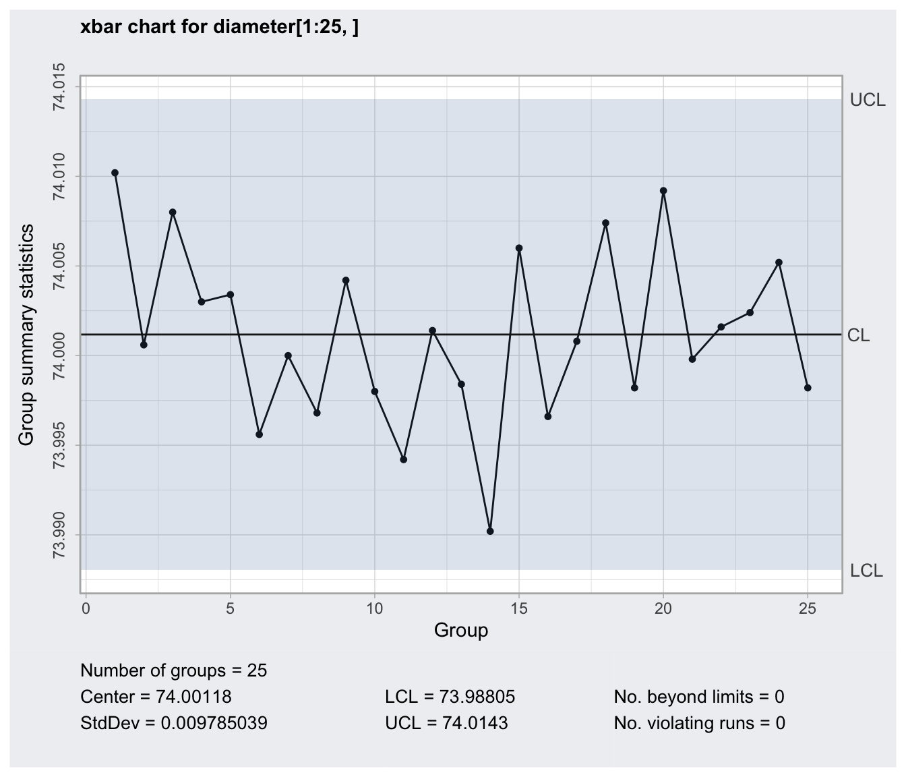
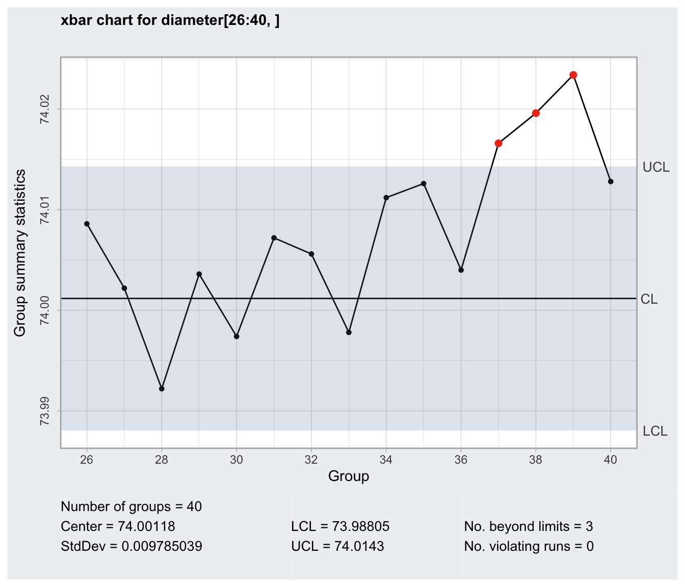
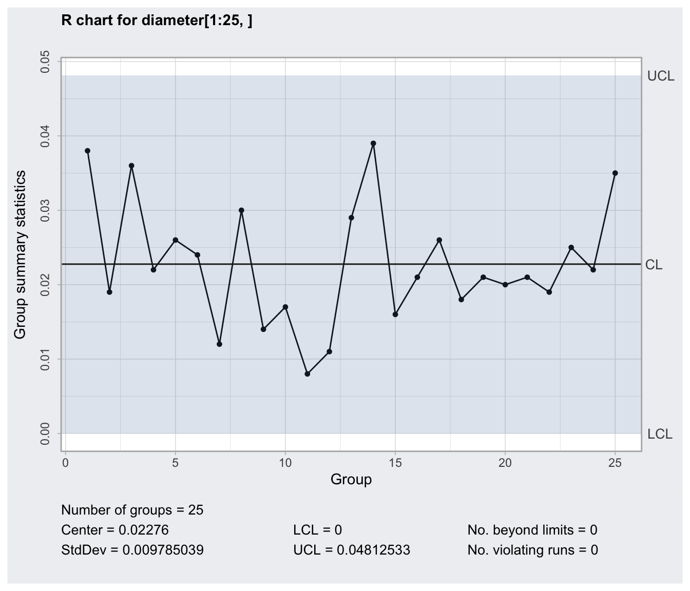
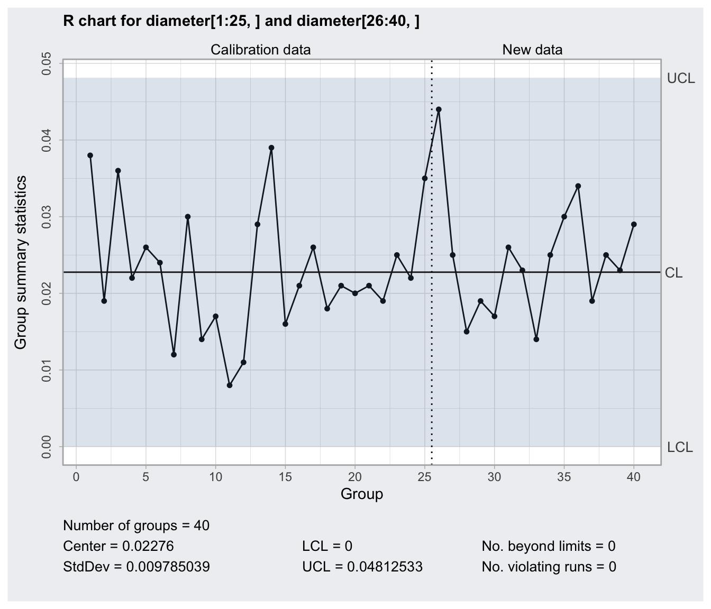
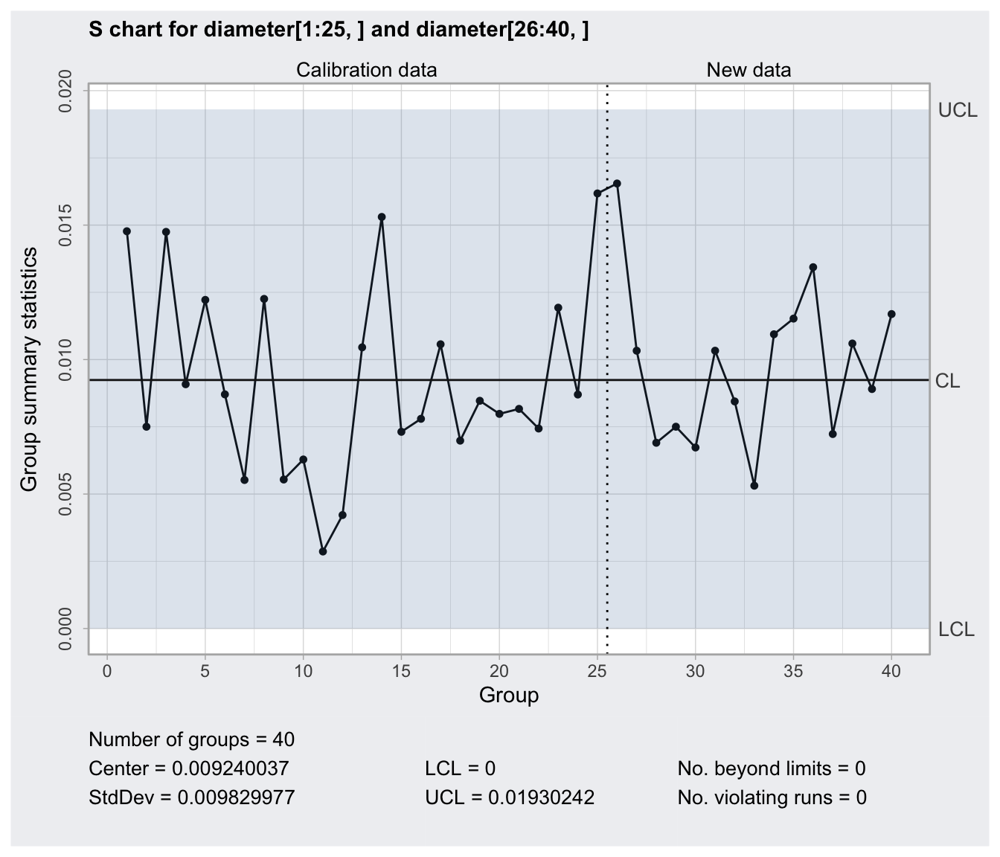
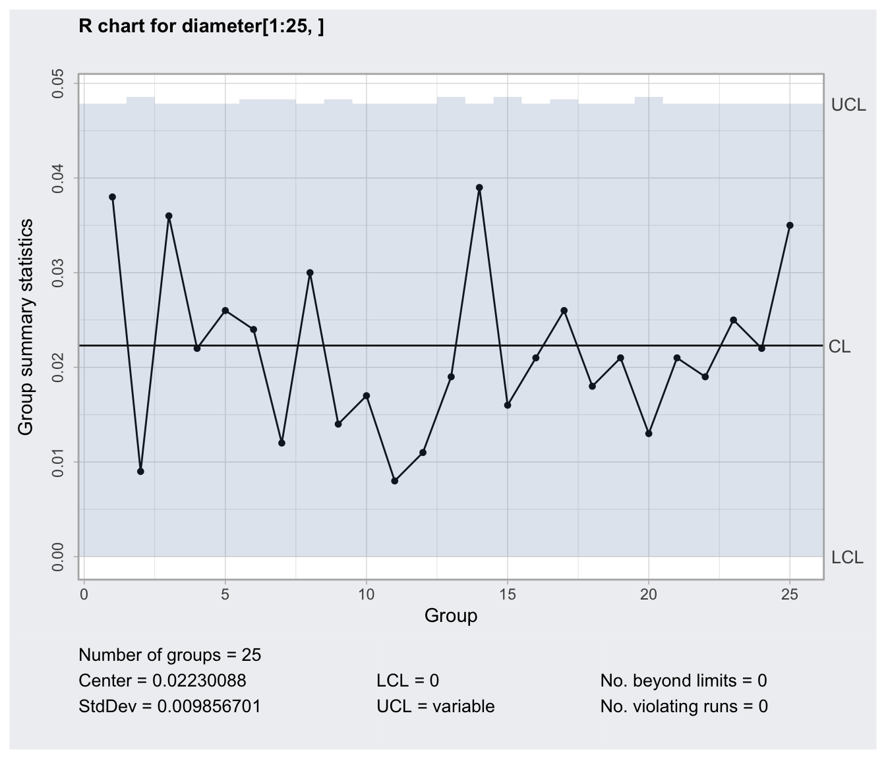

Quality Control Charts
qcc.RdCreate an object of class 'qcc' to perform statistical quality control. This object may then be used to plot Shewhart charts, drawing OC curves, computes capability indices, and more.
qcc(data,
type = c("xbar", "R", "S", "xbar.one", "p", "np", "c", "u", "g"),
sizes, center, std.dev, limits,
data.name, labels, newdata, newsizes, newdata.name,
newlabels, nsigmas = 3, confidence.level,
rules = c(1,4), plot = TRUE, …)
# S3 method for qcc
print(x, digits = getOption("digits"), …)
# S3 method for qcc
plot(x, add.stats = TRUE, chart.all = TRUE, fill = TRUE,
label.limits = c("LCL ", "UCL"), title, xlab, ylab, ylim,
axes.las = 0, digits = getOption("digits"),
restore.par = TRUE, …)
Arguments
| data | a data frame, a matrix or a vector containing observed data for the variable to chart. Each row of a data frame or a matrix, and each value of a vector, refers to a sample or ''rationale group''. |
|---|---|
| type | a character string specifying the group statistics to compute. Furthermore, a user specified type of chart, say |
| sizes | a value or a vector of values specifying the sample sizes associated with each group. For continuous data provided as data frame or matrix the sample sizes are obtained counting the non- |
| center | a value specifying the center of group statistics or the ''target'' value of the process. |
| std.dev | a value or an available method specifying the within-group standard deviation(s) of the process. |
| limits | a two-values vector specifying control limits. |
| data.name | a string specifying the name of the variable which appears on the plots. If not provided is taken from the object given as data. |
| labels | a character vector of labels for each group. |
| newdata | a data frame, matrix or vector, as for the |
| newsizes | a vector as for the |
| newdata.name | a string specifying the name of the variable which appears on the plots. If not provided is taken from the object given as newdata. |
| newlabels | a character vector of labels for each new group defined in the argument |
| nsigmas | a numeric value specifying the number of sigmas to use for computing control limits. It is ignored when the |
| confidence.level | a numeric value between 0 and 1 specifying the confidence level of the computed probability limits. |
| rules | a value or a vector of values specifying the rules to apply to the chart. See |
| plot | logical. If |
| add.stats | a logical value indicating whether statistics and other information should be printed at the bottom of the chart. |
| chart.all | a logical value indicating whether both statistics for |
| fill | a logical value specifying if the in-control area should be filled with the color specified in
|
| label.limits | a character vector specifying the labels for control limits. |
| title | a string giving the label for the main title. |
| xlab | a string giving the label for the x-axis. |
| ylab | a string giving the label for the y-axis. |
| ylim | a numeric vector specifying the limits for the y-axis. |
| axes.las | numeric in {0,1,2,3} specifying the style of axis labels. See |
| digits | the number of significant digits to use. |
| restore.par | a logical value indicating whether the previous |
| x | an object of class 'qcc'. |
| … | additional arguments to be passed to the generic function. |
Value
Returns an object of class 'qcc'.
Note
For a nice blog post discussing the qcc package, in particular how to implement the Western Eletric Rules (WER), see http://blog.yhat.com/posts/quality-control-in-r.html.
References
Mason, R.L. and Young, J.C. (2002) Multivariate Statistical Process Control with Industrial Applications, SIAM.
Montgomery, D.C. (2009) Introduction to Statistical Quality Control, 6th ed. New York: John Wiley & Sons.
Ryan, T. P. (2000), Statistical Methods for Quality Improvement, 2nd ed. New York: John Wiley & Sons, Inc.
Scrucca, L. (2004). qcc: an R package for quality control charting and statistical process control. R News 4/1, 11-17.
Wetherill, G.B. and Brown, D.W. (1991) Statistical Process Control. New York: Chapman & Hall.
See also
Examples
#> #> #>#> Error in qcc.groups(diameter, sample): could not find function "qcc.groups"qcc(diameter[1:25,], type="xbar")#> Error in diameter[1:25, ]: incorrect number of dimensionsqcc(diameter[1:25,], type="xbar", newdata=diameter[26:40,])#> Error in diameter[1:25, ]: incorrect number of dimensionsq <- qcc(diameter[1:25,], type="xbar", newdata=diameter[26:40,], plot=FALSE)#> Error in diameter[1:25, ]: incorrect number of dimensions#> Error in x(x): one of "yes", "no", "ask" or "default" expected.qcc(diameter[1:25,], type="xbar", newdata=diameter[26:40,], nsigmas=2)#> Error in diameter[1:25, ]: incorrect number of dimensionsqcc(diameter[1:25,], type="xbar", newdata=diameter[26:40,], confidence.level=0.99)#> Error in diameter[1:25, ]: incorrect number of dimensionsqcc(diameter[1:25,], type="R")#> Error in diameter[1:25, ]: incorrect number of dimensionsqcc(diameter[1:25,], type="R", newdata=diameter[26:40,])#> Error in diameter[1:25, ]: incorrect number of dimensionsqcc(diameter[1:25,], type="S")#> Error in diameter[1:25, ]: incorrect number of dimensionsqcc(diameter[1:25,], type="S", newdata=diameter[26:40,])#> Error in diameter[1:25, ]: incorrect number of dimensions# add warning limits at 2 std. deviations q <- qcc(diameter[1:25,], type="xbar", newdata=diameter[26:40,], plot=FALSE)#> Error in diameter[1:25, ]: incorrect number of dimensions#> Error in limits.xbar(q$center, q$std.dev, q$sizes, 2): could not find function "limits.xbar"#> Error in x(x): one of "yes", "no", "ask" or "default" expected.#> Error in int_abline(a = a, b = b, h = h, v = v, untf = untf, ...): object 'warn.limits' not found# variable control limits out <- c(9, 10, 30, 35, 45, 64, 65, 74, 75, 85, 99, 100) diameter <- qcc.groups(pistonrings$diameter[-out], sample[-out])#> Error in qcc.groups(pistonrings$diameter[-out], sample[-out]): could not find function "qcc.groups"qcc(diameter[1:25,], type="xbar")#> Error in diameter[1:25, ]: incorrect number of dimensionsqcc(diameter[1:25,], type="R")#> Error in diameter[1:25, ]: incorrect number of dimensionsqcc(diameter[1:25,], type="S")#> Error in diameter[1:25, ]: incorrect number of dimensionsqcc(diameter[1:25,], type="xbar", newdata=diameter[26:40,])#> Error in diameter[1:25, ]: incorrect number of dimensionsqcc(diameter[1:25,], type="R", newdata=diameter[26:40,])#> Error in diameter[1:25, ]: incorrect number of dimensionsqcc(diameter[1:25,], type="S", newdata=diameter[26:40,])#> Error in diameter[1:25, ]: incorrect number of dimensions#> #> #>qcc(D[trial], sizes=size[trial], type="p")#> p chart for D[trial] #> #> Summary of group statistics: #> Min. 1st Qu. Median Mean 3rd Qu. Max. #> 0.0800000 0.1600000 0.2100000 0.2313333 0.2950000 0.4800000 #> #> Group sample size = 50 #> Number of groups = 30 #> Center of group statistics = 0.2313333 #> Standard deviation = 0.421685 #> #> Control limits: #> LCL UCL #> 0.05242755 0.4102391 #> 0.05242755 0.4102391 #> ... #> 0.05242755 0.4102391# remove out-of-control points (see help(orangejuice) for the reasons) inc <- setdiff(which(trial), c(15,23)) q1 <- qcc(D[inc], sizes=size[inc], type="p")qcc(D[inc], sizes=size[inc], type="p", newdata=D[!trial], newsizes=size[!trial])#> p chart for D[inc] #> #> Summary of group statistics: #> Min. 1st Qu. Median Mean 3rd Qu. Max. #> 0.080 0.155 0.200 0.215 0.265 0.400 #> #> Group sample size = 50 #> Number of groups = 28 #> Center of group statistics = 0.215 #> Standard deviation = 0.4108223 #> #> Summary of group statistics in D[!trial]: #> Min. 1st Qu. Median Mean 3rd Qu. Max. #> 0.0400000 0.0800000 0.1100000 0.1108333 0.1200000 0.2400000 #> #> Group sample size = 50 #> Number of groups = 24 #> #> Control limits: #> LCL UCL #> 0.04070284 0.3892972 #> 0.04070284 0.3892972 #> ... #> 0.04070284 0.3892972#> #> #>#> p chart for D[trial] #> #> Summary of group statistics: #> Min. 1st Qu. Median Mean 3rd Qu. Max. #> 0.0400000 0.0800000 0.1100000 0.1108333 0.1200000 0.2400000 #> #> Group sample size = 50 #> Number of groups = 24 #> Center of group statistics = 0.1108333 #> Standard deviation = 0.3139256 #> #> Control limits: #> LCL UCL #> 0 0.2440207 #> 0 0.2440207 #> ... #> 0 0.2440207q2 <- qcc(D[trial], sizes=size[trial], type="p", newdata=D[!trial], newsizes=size[!trial])detach(orangejuice2) # put on the same graph the two orange juice samples oldpar <- par(no.readonly = TRUE) par(mfrow=c(1,2), mar=c(5,5,3,0)) plot(q1, title="First samples", ylim=c(0,0.5), add.stats=FALSE, restore.par=FALSE) par("mar"=c(5,0,3,3), yaxt="n") plot(q2, title="Second samples", add.stats=FALSE, ylim=c(0,0.5))#> #> #>qcc(x[trial], sizes=size[trial], type="c")#> c chart for x[trial] #> #> Summary of group statistics: #> Min. 1st Qu. Median Mean 3rd Qu. Max. #> 5.00000 16.00000 19.00000 19.84615 24.00000 39.00000 #> #> Group sample size = 100 #> Number of groups = 26 #> Center of group statistics = 19.84615 #> Standard deviation = 4.454902 #> #> Control limits: #> LCL UCL #> 6.481447 33.21086# remove out-of-control points (see help(circuit) for the reasons) inc <- setdiff(which(trial), c(6,20)) qcc(x[inc], sizes=size[inc], type="c", labels=inc)#> c chart for x[inc] #> #> Summary of group statistics: #> Min. 1st Qu. Median Mean 3rd Qu. Max. #> 10.00000 16.00000 19.00000 19.66667 24.00000 31.00000 #> #> Group sample size = 100 #> Number of groups = 24 #> Center of group statistics = 19.66667 #> Standard deviation = 4.434712 #> #> Control limits: #> LCL UCL #> 6.362532 32.9708qcc(x[inc], sizes=size[inc], type="c", labels=inc, newdata=x[!trial], newsizes=size[!trial], newlabels=which(!trial))#> c chart for x[inc] #> #> Summary of group statistics: #> Min. 1st Qu. Median Mean 3rd Qu. Max. #> 10.00000 16.00000 19.00000 19.66667 24.00000 31.00000 #> #> Group sample size = 100 #> Number of groups = 24 #> Center of group statistics = 19.66667 #> Standard deviation = 4.434712 #> #> Summary of group statistics in x[!trial]: #> Min. 1st Qu. Median Mean 3rd Qu. Max. #> 9.00 15.75 18.50 18.30 21.00 28.00 #> #> Group sample size = 100 #> Number of groups = 20 #> #> Control limits: #> LCL UCL #> 6.362532 32.9708qcc(x[inc], sizes=size[inc], type="u", labels=inc, newdata=x[!trial], newsizes=size[!trial], newlabels=which(!trial))#> u chart for x[inc] #> #> Summary of group statistics: #> Min. 1st Qu. Median Mean 3rd Qu. Max. #> 0.1000000 0.1600000 0.1900000 0.1966667 0.2400000 0.3100000 #> #> Group sample size = 100 #> Number of groups = 24 #> Center of group statistics = 0.1966667 #> Standard deviation = 0.4434712 #> #> Summary of group statistics in x[!trial]: #> Min. 1st Qu. Median Mean 3rd Qu. Max. #> 0.0900 0.1575 0.1850 0.1830 0.2100 0.2800 #> #> Group sample size = 100 #> Number of groups = 20 #> #> Control limits: #> LCL UCL #> 0.06362532 0.329708#> u chart for x #> #> Summary of group statistics: #> Min. 1st Qu. Median Mean 3rd Qu. Max. #> 1.00 1.40 2.00 1.93 2.25 3.20 #> #> Group sample size = 5 #> Number of groups = 20 #> Center of group statistics = 1.93 #> Standard deviation = 1.389244 #> #> Control limits: #> LCL UCL #> 0.06613305 3.793867#> u chart for x #> #> Summary of group statistics: #> Min. 1st Qu. Median Mean 3rd Qu. Max. #> 0.7368421 1.1750000 1.5119048 1.3972447 1.5721154 1.8400000 #> #> Summary of group sample sizes: #> sizes 8 9.5 10 10.5 12 12.5 13 #> counts 1 1.0 3 1.0 2 1.0 1 #> #> Number of groups = 10 #> Center of group statistics = 1.423256 #> Standard deviation = 1.193003 #> #> Control limits: #> LCL UCL #> 0.2914739 2.555038 #> 0.1578852 2.688626 #> ... #> 0.4109593 2.435552# standardized control chart q <- qcc(x, sizes=size, type="u", plot=FALSE) z <- (q$statistics - q$center)/sqrt(q$center/q$size) plot(z, type="o", ylim=range(z,3,-3), pch=16)detach(dyedcloth) ## ## Continuous one-at-time data ## # viscosity data (Montgomery, pag. 242) x <- c(33.75, 33.05, 34, 33.81, 33.46, 34.02, 33.68, 33.27, 33.49, 33.20, 33.62, 33.00, 33.54, 33.12, 33.84) qcc(x, type="xbar.one")#> xbar.one chart for x #> #> Summary of group statistics: #> Min. 1st Qu. Median Mean 3rd Qu. Max. #> 33.00000 33.23500 33.54000 33.52333 33.78000 34.02000 #> #> Group sample size = 1 #> Number of groups = 15 #> Center of group statistics = 33.52333 #> Standard deviation = 0.4261651 #> #> Control limits: #> LCL UCL #> 32.24484 34.80183qcc(x, type="xbar.one", std.dev = "SD")#> xbar.one chart for x #> #> Summary of group statistics: #> Min. 1st Qu. Median Mean 3rd Qu. Max. #> 33.00000 33.23500 33.54000 33.52333 33.78000 34.02000 #> #> Group sample size = 1 #> Number of groups = 15 #> Center of group statistics = 33.52333 #> Standard deviation = 0.3415928 #> #> Control limits: #> LCL UCL #> 32.49855 34.54811